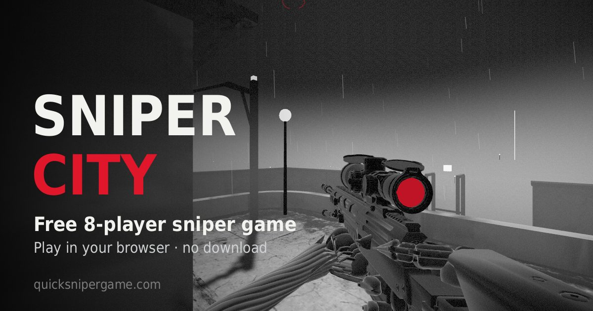

About Sniper City
Sniper City (狙擊之城) is a free sniper game for web browsers. Eight snipers fight across the rooftops of one Hong Kong block, in black and white with blood red, under an angel whose halo closes over the match. It can be played alone against bots or online in rooms of up to eight.
Facts
| Genre | First-person sniper shooter, last one alive |
| Price | Free |
| Players | 1 to 8 |
| Platforms | Desktop and mobile web browsers with WebGL. No download or account. |
| Technology | HTML5 and WebGL, built with three.js |
| Made by | An independent developer in India |
| Website | quicksnipergame.com |
Screenshots
These images may be used in articles and videos about the game.


Credits
The following 3D models are used under the Creative Commons Attribution 4.0 licence. Each was simplified and recoloured for the game.
- Attack drone: “Low Poly Quadcopter Drone – Game Ready PBR Asset” by SerhiiKo, CC BY 4.0, textures removed
- Missile: “Missile” by k_r_i_b, CC BY 4.0, simplified and textures removed
- Strike plane: “Chernovan Nemesis” by Swiss_Fox, CC BY-NC 4.0, simplified and textures removed
- Arms and Desert Eagle: “Desert Eagle fps Cyberpunk arms (Female)” by coffee owl
- AWM: “AWP | AWM” by AvnisT
- Lucifer: “Fallen Angel Demon Knight” by Pigcraft
- RPG: “RPG-7” by ArtEast.
- Dog: “Zombie Dog” by LostBoyz2078
- Mech Police operator: “Mech Robotic Police 3D Model w/ Scifi Gun” by CHM, CC BY 4.0, gun removed, simplified and rigged
- S.W.A.T. operator: “S.W.A.T. Operator” by Mateusz Woliński, CC BY 4.0, props removed and simplified
- Oni operator: “Female Character” by little.bucket, CC BY-NC-SA 4.0, rigged and textures reduced; the rigged version (op3.txt) is shared under the same licence
- Hammer model by Eryk Stańko
Music: “3 AM Rooftop Watch”. Recorded weapon sounds from Pixabay: sniper rifle shots by dennish18 and freesound_community, bullet near miss by matthiasw1, magazine by melbeebelbee, footsteps by Universfield, pistol dry fire by ivanisms, metal and wood bullet impacts made with ElevenLabs; the pistol, explosion, ricochet, concrete impact and drone sounds are synthesised for the game; distant gunfire, automatic fire and shell casings by freesound_community.
Play Sniper City free